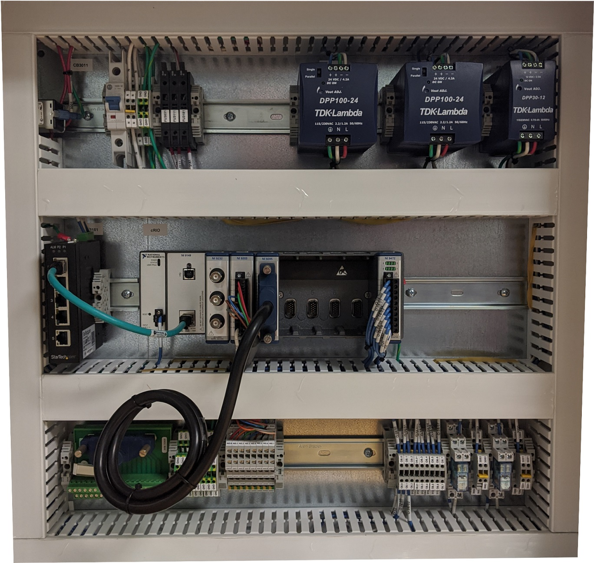
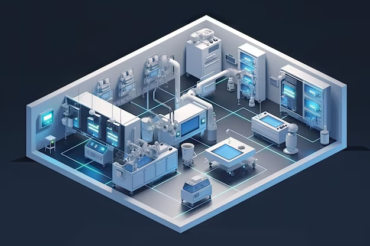
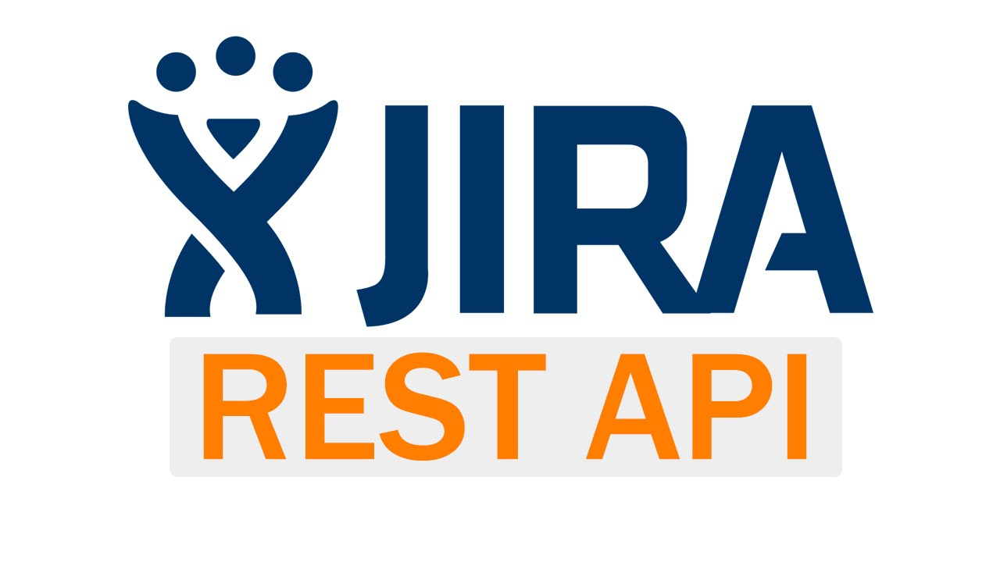
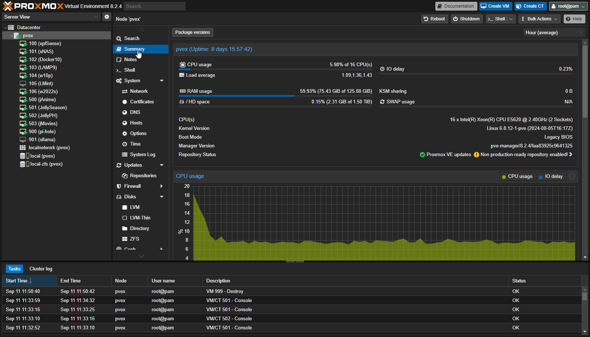
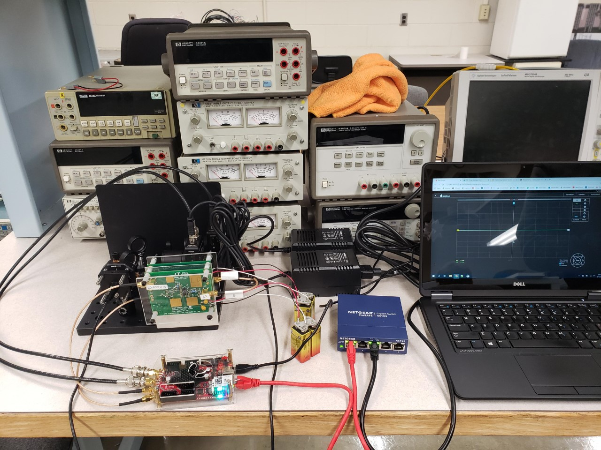

Projects & Work

In Progress
Remote Hardware Execution Platform
- Plugin architecture supports any networked hardware transport
- Service account authentication with per-client whitelisting
- ~80% cost reduction replacing manual hardware testing workflows
- Adoption expanding to multiple labs across the organization

In Progress
System Integration Lab Interactive Map
- Live isometric lab visualization driven by automated hardware audit data
- Full config lifecycle: machine manifests, HIL configs, software deployment
- Custom RBAC and multi-user session management
- Automated traceability reports for test events

Atlassian API Toolkit
- Built reusable API clients that powered multiple internal tools
- Removed repetitive auth, retry, and rate-limit boilerplate
- Supported Jira exporters, equipment tools, and inventory dashboards
- Handled multiple authentication models across Atlassian environments

Homelab Infrastructure
- Replaced paid cloud tools with self-hosted services
- Built a Proxmox-based environment on repurposed hardware
- Added network-wide ad blocking and secure remote access
- Documented the architecture for long-term maintenance and easier recovery

Telescope Control Bridge
- Connected incompatible software and telescope hardware through protocol translation
- Made telescope control possible through Stellarium's cleaner interface
- Converted coordinates in real time for accurate pointing
- Added fault handling to keep communication dependable

FPGA Laser Interferometer Control System
- Built an FPGA-based control system for laser wavelength stabilization
- Implemented a Pound-Drever-Hall loop with PID feedback
- Ran real-time control loops with microsecond-level timing
- Delivered a lower-cost prototype on commercial FPGA hardware

Frequency-Response Circuit Synthesis
- Implemented vector fitting for black-box circuit analysis
- Reconstructed circuit behavior from frequency-response data
- Automated RLC parameter extraction and SPICE netlist generation
- Enforced passivity so synthesized circuits stayed physically meaningful